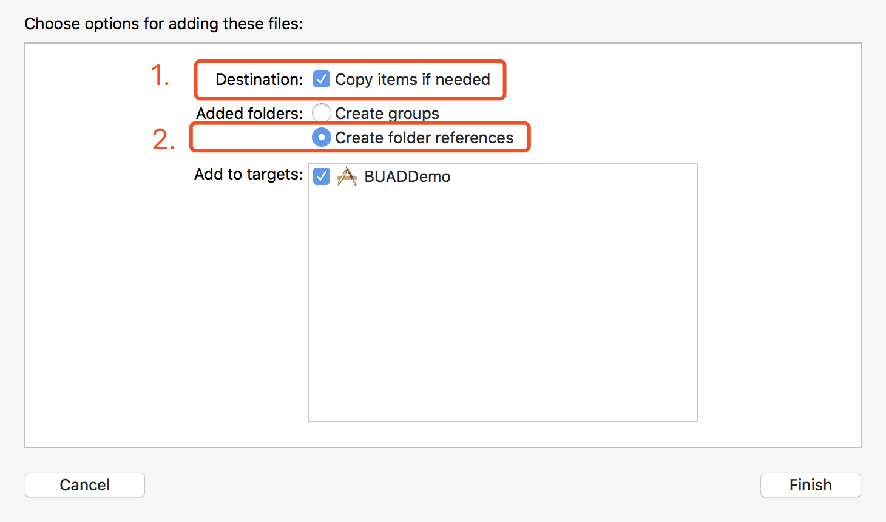
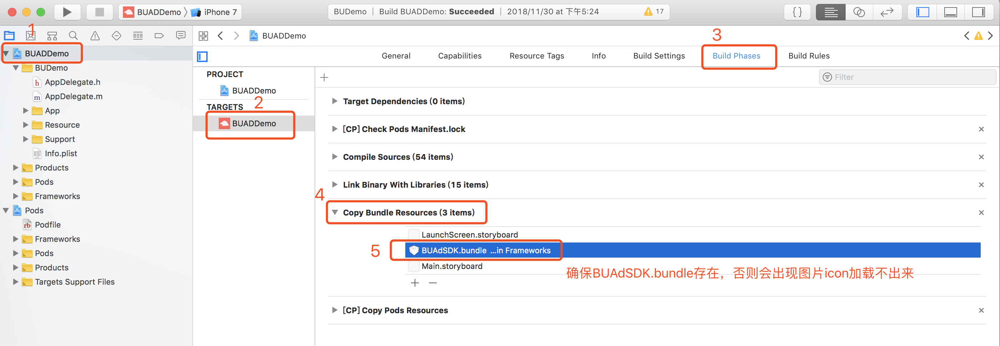
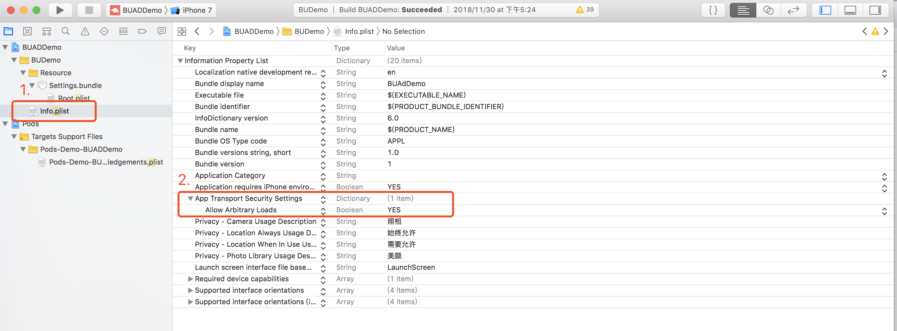
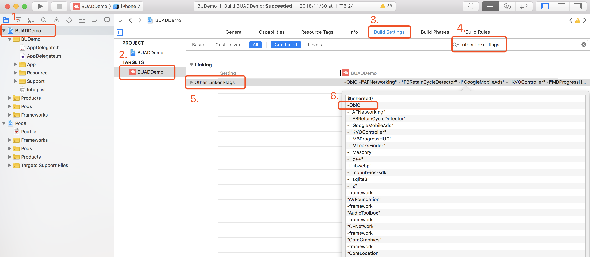

TikTok Audience NetworkにAppIDと広告SlotIDを申請してください。
frameworkファイルを取得後、{BUAdSDK.framework, BUAdSDK.bundle}ファイルをプロジェクトに直接、ドラッグ&ドロップすれば完了です。
ドラッグ&ドロップするときは、以下の方法で選択してください。

ドラッグ&ドロップ完了後は、Copy Bundle ResourcesにBUAdSDK.bundleが含まれていることを確認してください。含まれていないと、incon画像をロードできないことがあります。

SDK2000バージョン以降はpod方式による接続をサポートしています。pod環境を設定し、podfileに以下のコードを入れるだけで接続できます。
pod 'Bytedance-UnionAD', '~> 2.0.0.0'
pod方式の接続について更に詳しくお知りになりたい方はgitthubアドレスをご参照ください
追加するシステムライブラリに注意すること
App Transport Security Settingsを追加するには、まず左側の展開矢印をクリックし、さらに右側のプラスマークをクリックすると、自動的にAllow Arbitrary Loadsオプションが追加され、値がYESに変更されます。SDK APIは全HTTPSをサポートしていますが、広告主のクリエイティブが非HTTPSの場合もあります。
<key>NSAppTransportSecurity</key>
<dict>
<key>NSAllowsArbitraryLoads</key>
<true/>
</dict>
詳しい操作は図の通りです。


プロジェクトはTARGETS -> Build PhasesでLink Binary With Librariesを検索し、「+」をクリック、下記依存ライブラリを追加する必要があります
BUAdSDKManagerクラスはSDK全体に設定されている入力ポートとインターフェイスであり、 SDKに関するグローバル情報の設定や、クラスメソッドの設定取得結果の提供が可能です。
現在、インターフェイスでは以下のクラスメソッドを提供しています
/**
Register the App key that’s already been applied before requesting an ad from TikTok Audience Network.
@param appID : the unique identifier of the App
*/
+ (void)setAppID:(NSString *)appID;
/**
Configure development mode.
@param level : default BUAdSDKLogLevelNone
*/
+ (void)setLoglevel:(BUAdSDKLogLevel)level;
/// Set the gender of the user.
+ (void)setUserGender:(BUUserGender)userGender;
/// Set the age of the user.
+ (void)setUserAge:(NSUInteger)userAge;
/// Set the user's keywords, such as interests and hobbies, etc.
+ (void)setUserKeywords:(NSString *)keywords;
/// set additional user information.
+ (void)setUserExtData:(NSString *)data;
/// Set whether the app is a paid app, the default is a non-paid app
+ (void)setIsPaidApp:(BOOL)isPaidApp;
+ (NSString *)appID;
+ (BOOL)isPaidApp;
SDKはAppDelegateで - (BOOL)application:(UIApplication *)application didFinishLaunchingWithOptions:(NSDictionary *)launchOptions初期化する必要があります
そのうち、以下の設定は必須です。また、関連appIDの設定を使用する必要があります
[BUAdSDKManager setAppID:@"xxxxxx"];
使用方法について更に詳しくお知りになりたい方はSDK Demoプロジェクトをご参照ください
毎回新たにBURewardedVideoAdオブジェクトを生成し、loadAdDataを呼び出す方法で最新のリワード動画をリクエストする必要があります。繰り返しローカルキャッシュを使用して、何度もリワード動画を展示することはおやめください。
@interface BURewardedVideoAd : NSObject
@property (nonatomic, strong) BURewardedVideoModel *rewardedVideoModel;
@property (nonatomic, weak, nullable) id<BURewardedVideoAdDelegate> delegate;
/**
Whether material is effective.
Setted to YES when data is not empty and has not been displayed.
Repeated display is not billed.
*/
@property (nonatomic, getter=isAdValid, readonly) BOOL adValid;
- (instancetype)initWithSlotID:(NSString *)slotID rewardedVideoModel:(BURewardedVideoModel *)model;
- (void)loadAdData;
- (BOOL)showAdFromRootViewController:(UIViewController *)rootViewController;
@end
@protocol BURewardedVideoAdDelegate <NSObject>
@optional
/**
This method is called when video ad material loaded successfully.
*/
- (void)rewardedVideoAdDidLoad:(BURewardedVideoAd *)rewardedVideoAd;
/**
This method is called when video ad materia failed to load.
@param error : the reason of error
*/
- (void)rewardedVideoAd:(BURewardedVideoAd *)rewardedVideoAd didFailWithError:(NSError *)error;
/**
This method is called when video cached successfully.
*/
- (void)rewardedVideoAdVideoDidLoad:(BURewardedVideoAd *)rewardedVideoAd;
/**
This method is called when video ad slot will be showing.
*/
- (void)rewardedVideoAdWillVisible:(BURewardedVideoAd *)rewardedVideoAd;
/**
This method is called when video ad slot has been shown.
*/
- (void)rewardedVideoAdDidVisible:(BURewardedVideoAd *)rewardedVideoAd;
/**
This method is called when video ad is about to close.
*/
- (void)rewardedVideoAdWillClose:(BURewardedVideoAd *)rewardedVideoAd;
/**
This method is called when video ad is closed.
*/
- (void)rewardedVideoAdDidClose:(BURewardedVideoAd *)rewardedVideoAd;
/**
This method is called when video ad is clicked.
*/
- (void)rewardedVideoAdDidClick:(BURewardedVideoAd *)rewardedVideoAd;
/**
This method is called when video ad play completed or an error occurred.
@param error : the reason of error
*/
- (void)rewardedVideoAdDidPlayFinish:(BURewardedVideoAd *)rewardedVideoAd didFailWithError:(NSError *)error;
/**
Server verification which is requested asynchronously is succeeded.
@param verify :return YES when return value is 2000.
*/
- (void)rewardedVideoAdServerRewardDidSucceed:(BURewardedVideoAd *)rewardedVideoAd verify:(BOOL)verify;
/**
Server verification which is requested asynchronously is failed.
Return value is not 2000.
*/
- (void)rewardedVideoAdServerRewardDidFail:(BURewardedVideoAd *)rewardedVideoAd;
/**
This method is called when the user clicked skip button.
*/
- (void)rewardedVideoAdDidClickSkip:(BURewardedVideoAd *)rewardedVideoAd;
@end
BURewardedVideoModel *model = [[BURewardedVideoModel alloc] init];
model.userId = @"123";
model.isShowDownloadBar = YES;
self.rewardedVideoAd = [[BURewardedVideoAd alloc] initWithSlotID:self.viewModel.slotID rewardedVideoModel:model];
self.rewardedVideoAd.delegate = self;
[self.rewardedVideoAd loadAdData];
@interface BURewardedVideoModel : NSObject
/**
required.
Third-party game user_id identity.
Mainly used in the reward issuance, it is the callback pass-through parameter from server-to-server.
It is the unique identifier of each user.
In the non-server callback mode, it will also be pass-through when the video is finished playing.
Only the string can be passed in this case, not nil.
*/
@property (nonatomic, copy) NSString *userId;
//optional. reward name.
@property (nonatomic, copy) NSString *rewardName;
//optional. number of rewards.
@property (nonatomic, assign) NSInteger rewardAmount;
//optional. serialized string.
@property (nonatomic, copy) NSString *extra;
// Whether to display the download Bar, the default is YES.
@property (nonatomic, assign) BOOL isShowDownloadBar;
@end
サーバからサーバへのコールバックにより、リワード広告を見るユーザに報酬を提供するか否かを判定できます。ユーザが広告を最後まで見た場合は、ToutiaoのメディアプラットフォームでToutiaoサーバからお客様自身のサーバへコールバックURLを割り当て、ユーザの操作完了を伝えることができます。
ToutiaoのサーバはGET方式で第三者のサービスのコールバックURLをリクエストし、以下のパラメータを返します。 user_id=%s&trans_id=%s&reward_name=%s&reward_amount=%d&extra=%s&sign=%s
| フィールドの定義 | フィールド名 | フィールドタイプ | 注釈 |
|---|---|---|---|
| sign | サイン | string | サイン |
| user_id | ユーザid | string | SDKパススルーを呼び出し、アプリケーション側がユーザを識別唯一のもの |
| trans_id | 取引id | string | 最後まで見た場合の唯一の取引ID |
| reward_amount | リワード数 | int | TikTok Audience Networkから割り当てられるかSDKを呼び出して入れる |
| reward_name | リワード名 | string | TikTok Audience Networkから割り当てられるかSDKを呼び出して入れる |
| extra | Extra | string | SDKを呼び出して入れ、パススルーします。必要ない場合はヌルになります。 |
appSecurityKey: TikTok Audience Networkのリワード動画コードビットの作成で取得したキーtransId：取引id sign = sha256(appSecurityKey:transId)
Pythonを例にする場合：
import hashlib
if __name__ == "__main__":
trans_id = "6FEB23ACB0374985A2A52D282EDD5361u6643"
app_security_key = "7ca31ab0a59d69a42dd8abc7cf2d8fbd"
check_sign_raw = "%s:%s" % (app_security_key, trans_id)
sign = hashlib.sha256(check_sign_raw).hexdigest()
jsonデータをレスポンスします。フィールドは以下の通り。
| フィールドの定義 | フィールド名 | フィールドタイプ | 注釈 |
|---|---|---|---|
| isValid | 校正結果 | bool | 判定結果、リワードを支給するか。 |
例：
{
"isValid": true
}
AdMobでリワード動画を統合するには二つの方法があります。一つはAdMob広告連盟で、もう一つはCustomEvent Adapterで統合する方法です。現在、JinriToutiaoは二つ目の方法をサポートしており、CustomEventを設定し、CustomEvent Adapterを実現する必要があります。Rewarded Video Adapters公式サイトのガイドラインをご参照ください
リワード動画のリクエスト方法はRewarded Video公式サイトのガイドラインをご参照ください
広告テストはTest Adsをご参照ください
接続中の問題を減らすために、以下の点にご注意ください。
毎回、新しいBUFullscreenVideoAdオブジェクトを生成し、loadAdDataを呼び出す方法で、最新リワード動画をリクエストする必要があります。繰り返しローカルキャッシュを使用して、何度もリワード動画を展示することはやめてください。
@interface BUFullscreenVideoAd : NSObject
@property (nonatomic, weak, nullable) id<BUFullscreenVideoAdDelegate> delegate;
@property (nonatomic, getter=isAdValid, readonly) BOOL adValid;
/**
Initializes video ad with slot id.
@param slotID : the unique identifier of video ad.
@return BUFullscreenVideoAd
*/
- (instancetype)initWithSlotID:(NSString *)slotID;
/**
Load video ad datas.
*/
- (void)loadAdData;
/**
Display video ad.
@param rootViewController : root view controller for displaying ad.
@return : whether it is successfully displayed.
*/
- (BOOL)showAdFromRootViewController:(UIViewController *)rootViewController;
@end
@protocol BUFullscreenVideoAdDelegate <NSObject>
@optional
/**
This method is called when video ad material loaded successfully.
*/
- (void)fullscreenVideoMaterialMetaAdDidLoad:(BUFullscreenVideoAd *)fullscreenVideoAd;
/**
This method is called when video ad materia failed to load.
@param error : the reason of error
*/
- (void)fullscreenVideoAd:(BUFullscreenVideoAd *)fullscreenVideoAd didFailWithError:(NSError *)error;
/**
This method is called when video cached successfully.
*/
- (void)fullscreenVideoAdVideoDataDidLoad:(BUFullscreenVideoAd *)fullscreenVideoAd;
/**
This method is called when video ad slot will be showing.
*/
- (void)fullscreenVideoAdWillVisible:(BUFullscreenVideoAd *)fullscreenVideoAd;
/**
This method is called when video ad slot has been shown.
*/
- (void)fullscreenVideoAdDidVisible:(BUFullscreenVideoAd *)fullscreenVideoAd;
/**
This method is called when video ad is clicked.
*/
- (void)fullscreenVideoAdDidClick:(BUFullscreenVideoAd *)fullscreenVideoAd;
/**
This method is called when video ad is about to close.
*/
- (void)fullscreenVideoAdWillClose:(BUFullscreenVideoAd *)fullscreenVideoAd;
/**
This method is called when video ad is closed.
*/
- (void)fullscreenVideoAdDidClose:(BUFullscreenVideoAd *)fullscreenVideoAd;
/**
This method is called when video ad play completed or an error occurred.
@param error : the reason of error
*/
- (void)fullscreenVideoAdDidPlayFinish:(BUFullscreenVideoAd *)fullscreenVideoAd didFailWithError:(NSError *)error;
/**
This method is called when the user clicked skip button.
*/
- (void)fullscreenVideoAdDidClickSkip:(BUFullscreenVideoAd *)fullscreenVideoAd;
@end
- (void)viewDidLoad {
[super viewDidLoad];
// Do any additional setup after loading the view.
#warning----- Every time the data is requested, a new one BUFullscreenVideoAd needs to be initialized. Duplicate request data by the same full screen video ad is not allowed.
self.fullscreenVideoAd = [[BUFullscreenVideoAd alloc] initWithSlotID:self.viewModel.slotID];
self.fullscreenVideoAd.delegate = self;
[self.fullscreenVideoAd loadAdData];
[self.view addSubview:self.button];
}
- (UIButton *)button {
if (!_button) {
CGSize size = [UIScreen mainScreen].bounds.size;
_button = [[BUDNormalButton alloc] initWithFrame:CGRectMake(0, size.height*0.75, 0, 0)];
[_button setTitle:[NSString localizedStringForKey:ShowFullScreenVideo] forState:UIControlStateNormal];
[_button addTarget:self action:@selector(buttonTapped:) forControlEvents:UIControlEventTouchUpInside];
}
return _button;
}
- (void)buttonTapped:(id)sender {
/**Return YES when material is effective,data is not empty and has not been displayed.
Repeated display is not charged.
*/
[self.fullscreenVideoAd showAdFromRootViewController:self.navigationController];
}
データ取得における異常は主にコールバック方法で処理されます。
- (void)rewardedVideoAd:(BURewardedVideoAd *)rewardedVideoAd didFailWithError:(NSError *)error;
- (void)fullscreenVideoAd:(BUFullscreenVideoAd *)fullscreenVideoAd didFailWithError:(NSError *)error;
以下は各種のerror codeの値です。
BUErrorCodeTempError = -6, // native template is invalid
BUErrorCodeTempAddationError= -5, // native template addation is invalid
BUErrorCodeOpenAPPStoreFail = -4, // failed to open appstore
BUErrorCodeNOAdError = -3, // parsed data has no ads
BUErrorCodeNetError = -2, // network request failed
BUErrorCodeParseError = -1, // parsing failed
BUErrorCodeParamError = 10001, // parameter error
BUErrorCodeTimeout = 10002,
BUErrorCodeSuccess = 20000,
BUErrorCodeNOAD = 20001, // no ads
BUErrorCodeContentType = 40000, // http conent_type error
BUErrorCodeRequestPBError = 40001, // http request pb error
BUErrorCodeAppEmpty = 40002, // request app can't be empty
BUErrorCodeWapEMpty = 40003, // request wap can't be empty
BUErrorCodeAdSlotEmpty = 40004, // missing ad slot description
BUErrorCodeAdSlotSizeEmpty = 40005, // the ad slot size is invalid
BUErrorCodeAdSlotIDError = 40006, // the ad slot ID is invalid
BUErrorCodeAdCountError = 40007, // request the wrong number of ads
BUErrorCodeAdPackageIncomplete = 40025, // the SDK package is incomplete. It is recommended to verify the integrity of SDK package or contact technical. support
BUErrorCodeSysError = 50001 // ad server error
1.iOSの広告画面をappで開くと、閉じたり、戻ったりすることができません。
答え：お使いのホームページViewControllerでNavigationBarを非表示にしている場合、戻ることができません。
2.ToutiaoSDKのBUWebViewControllerクラスとTTRUIWebViewクラスにメモリのリークがあります。
答え：システムによる問題です。UIWebViewではリークが発生します。WKWebViewへの取り替えを検討しています。
3.リワード動画を再生するとき、orientationは設定できますか。
答え：orientationはsdkにより現在のスクリーンの状態を読み取ります。開発者による設定は不要です。バックグラウンドが該当する広告のクリエイティブ（横向きクリエイティブ、縦向きクリエイティブ)をレスポンスします。
4.userIdとは何ですか。
答え：第三者のゲームのuser_idの認証アカウントで、主にリワードが有効となるかを判定する過程で、サーバからサーバへのコールバックパススルーされるパラメータで、ゲームがユーザを識別する唯一のものです。非サーバコールバックモードは動画再生終了後のコールバックにおいても、ゲームアプリケーションにパススルーされますが、この時、ヌルの文字列がパススルーされ、nilは送られません。
5.iOSをまとめたパッケージのサイズはどれくらいですか？
答え：demoパッケージをもとに計算すると約580kです。しかし、具体的なサイズは導入した機能により異なりますので、実際のサイズはまとめた後のパッケージサイズに準じます。
6.リワード動画とフルスクリーン動画における素材ロードのコールバック成功と広告動画におけるクリエイティブキャッシュのコールバック成功にはどのような違いがあるのでしょうか。
答え：素材ロードの成功とは広告素材のクリエイティブのロード完了を言い、広告を展示することができます。但し、動画はシングルスレッドでロードされるため、この時の動画データはキャッシュができていません。そのため、インターネットの接続状況が悪い中で動画類を再生する際は、リアルタイムでデータをロードするため、動画が止まることがあります。スムーズに再生するためには、広告動画のクリエイティブのキャッシュができる時に広告を展示されることをお勧めします。